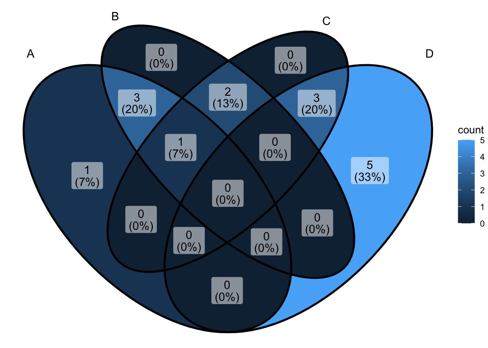

pacman::p_load(tidyverse,
knitr,
dplyr,
tidyr,
ggplot2,
readr,
kableExtra,
stargazer,
lmtest,
plm)3 Difference in Differences
3.1 Prerequisites
We will use following packages for reproducing the contents of this chapter. For mamaging the necessary packages, we will use pacman package manager.
3.2 Before-and-after and Difference-in-Differences designs
In observational studies, the data collected over time are a valuable source of information. Multiple measurements taken over time on the same units are called longitudinal data or panel data. Longitudinal data often yield a more credible comparison of the treatment and control groups than cross-section data because the former contain additional information about changes over time.
The before-and-after design examines how the outcome variable changed from the pre-treatment period to the post-treatment period for the same set of units. The design is able to adjust for any confounding factor that is specific to each unit but does not change over time. However, the design does not address possible bias due to time-varying confounders.
The difference-in-differences (DiD) design extends the before-and-after design to address the confounding bias due to time trends. The key assumption behind the DiD design is that the outcome variable follows a parallel trend in the absence of treatment.
Following figure graphically illustrates this assumption using the minimum-wage study data. The figure shows the outcome of interest, i.e., the average proportion of full-time employees, before and after the increase in the minimum wage for both the treatment group (fast-food restaurants in NJ, indicated by the solid black circles) and the control group (restaurants in PA, represented by the open black circles). In this setting, we can estimate the counterfactual outcome for the treatment group by assuming that the time trend for the treatment group is parallel to the observed trend for the control group. This estimate is indicated by the solid blue triangle.
In the minimum- wage study, the researchers had collected the employment and wage information from the same set of restaurants before the minimum wage was increased in NJ. This pretreatment information allows several alternative designs for estimating causal effects in observational studies.
3.2.1 Minimum wage and unemployment
Our discussion of observational studies is based on the aforementioned minimum- wage debate. Two social science researchers examined the impact of raising the minimum wage on employment in the fast-food industry.3 In 1992, the state of New Jersey (NJ) in the United States raised the minimum wage from USD 4.25 to USD 5.05 per hour. Did such an increase in the minimum wage reduce employment as economic theory predicts?
3.3 Wide and long data formats
Wide data set:
city_wide_df <- read.csv("data/city_wide.csv")
city_wide_df %>% knitr::kable() %>% kableExtra::kable_styling()| city | pop_2000 | pop_2010 | pop_2020 |
|---|---|---|---|
| Berlin | 3.38 | 3.45 | 3.56 |
| Rome | 3.70 | 3.96 | 4.26 |
| Paris | 9.74 | 10.46 | 11.01 |
| London | 7.27 | 8.04 | 9.30 |
city_long_df <- read.csv("data/city_long.csv")
city_long_df %>% knitr::kable() %>% kableExtra::kable_styling()| city | year | pop |
|---|---|---|
| Berlin | 2000 | 3.38 |
| Berlin | 2010 | 3.45 |
| Berlin | 2020 | 3.56 |
| Rome | 2000 | 3.70 |
| Rome | 2010 | 3.96 |
| Rome | 2020 | 4.26 |
| Paris | 2000 | 9.74 |
| Paris | 2010 | 10.46 |
| Paris | 2020 | 11.01 |
| London | 2000 | 7.27 |
| London | 2010 | 8.04 |
| London | 2020 | 9.30 |
Convert “city_wide_df” to long data set
city_wide_df %>%
tidyr::pivot_longer(
cols = c(pop_2000, pop_2010, pop_2020), # -city, !city, starts_with(pop_), etc... would also work
names_to = "year", # where do we want the names of the columns to go? (year)
names_prefix = "pop_", # names_prefix removes matching text from the start of each variable name (not always necessary)
values_to = "pop" # where do we want the values in the columns to go? (pop)
)# A tibble: 12 × 3
city year pop
<chr> <chr> <dbl>
1 "Berlin " 2000 3.38
2 "Berlin " 2010 3.45
3 "Berlin " 2020 3.56
4 "Rome " 2000 3.7
5 "Rome " 2010 3.96
6 "Rome " 2020 4.26
7 "Paris " 2000 9.74
8 "Paris " 2010 10.5
9 "Paris " 2020 11.0
10 "London " 2000 7.27
11 "London " 2010 8.04
12 "London " 2020 9.3 3.3.1 Why do we care about the data format
In some instances long format datasets are required for advanced statistical analysis and graphing. For example, if we wanted to run the regression formulation of the difference in differences model, we would need to input our data in long format. Furthermore, having our data in long format is very useful when plotting. Packages such as ggplot2, expect that your data will be in long form for the most part.
soda_tax_df <- read.csv("data/soda_tax_df.csv")Are this wide or long data
soda_tax_df %>% head(10) id district treatment pre_tax post_tax
1 1 Snake Lounge 0 1687.6438 1705.5791
2 2 Snake Lounge 0 427.2953 438.2526
3 3 Snake Lounge 0 566.4693 559.6664
4 4 Snake Lounge 0 606.9294 623.9057
5 5 Snake Lounge 0 572.6402 606.8654
6 6 Snake Lounge 0 496.0813 501.8001
7 7 Snake Lounge 0 658.7283 670.4385
8 8 Snake Lounge 0 497.8011 522.3219
9 9 Snake Lounge 0 814.7636 846.2049
10 10 Snake Lounge 0 502.5929 509.9525Our soda_tax_df is in wide format. We can convert our data to a long format to render the time and treatment dummy variables and save is to the soda_tax_df_long.
We will utilize the pivot_longer() function from tidyr to format our data frame.
soda_tax_df_long <-
soda_tax_df %>% # the wide format df
tidyr::pivot_longer(cols = c(pre_tax, post_tax), # both contain information about soda drank at two points in time
names_to = "period", # grab the names of pre and post and save them to period
values_to = "soda_drank") %>% # grab values from pre and post and put them in soda_drank
dplyr::mutate(after_tax = ifelse(period == "post_tax", 1, 0)) # create dummy for period
head(soda_tax_df_long, 10)# A tibble: 10 × 6
id district treatment period soda_drank after_tax
<int> <chr> <int> <chr> <dbl> <dbl>
1 1 Snake Lounge 0 pre_tax 1688. 0
2 1 Snake Lounge 0 post_tax 1706. 1
3 2 Snake Lounge 0 pre_tax 427. 0
4 2 Snake Lounge 0 post_tax 438. 1
5 3 Snake Lounge 0 pre_tax 566. 0
6 3 Snake Lounge 0 post_tax 560. 1
7 4 Snake Lounge 0 pre_tax 607. 0
8 4 Snake Lounge 0 post_tax 624. 1
9 5 Snake Lounge 0 pre_tax 573. 0
10 5 Snake Lounge 0 post_tax 607. 13.3.2 Exploring our data
We can use our soda_tax_df to explore the distribution of soda consumption at different points in time.
Let’s try first to look at the differences in the distribution only at the
3.3.2.1 pre-tax time period:
ggplot(soda_tax_df, aes(x = pre_tax, fill = factor(treatment))) +
geom_density(alpha = 0.5) + # density plot with transparency (alpha = 0.5)
scale_fill_manual(name = " ", # changes to fill dimension
values = c("#a7a8aa", "#cc0055"),
labels = c("Control", "Treatment")) +
theme_minimal() +
theme(legend.position = "bottom") +
labs(title = "Distribution of soda consumption before the tax was imposed",
x = "Soda consumtion (oz)",
y = "Density")
Let’s look at the
3.3.2.2 post-tax period:
ggplot(soda_tax_df, aes(x = post_tax, fill = factor(treatment))) +
geom_density(alpha = 0.5) + # density plot with transparency (alpha = 0.5)
scale_fill_manual(name = " ", # changes to fill dimension
values = c("#a7a8aa", "#cc0055"),
labels = c("Control", "Treatment")) +
theme_minimal() +
theme(legend.position = "bottom") +
labs(title = "Distribution of soda consumption after the tax was imposed",
x = "Soda consumtion (oz)",
y = "Density")Since in our soda_tax_df_long we represent the time and soda consumption dimensions under the same columns, we can create even more complex graphs.
3.3.2.3 grammar of graphs: Facets
We will use facet_grid() which forms a matrix of panels defined by row and column faceting variables. It is most useful when you have two discrete variables, and all combinations of the variables exist in the data.
soda_tax_df_long %>%
dplyr::mutate(period = ifelse(period == "post_tax", "T1 - Post-tax", "T0 - Pre-tax"), # create more meaningful labels
treatment = ifelse(treatment == 1, "Treated (D=1)", "Untreated (D=0)")) %>%
dplyr::group_by(period, treatment) %>% # group to extract means of each group at each time
dplyr::mutate(group_mean = mean(soda_drank)) %>% # extract means of each group at each time
ggplot(., aes(x = soda_drank, fill = factor(treatment))) +
geom_density(alpha = 0.5) +
scale_fill_manual(name = " ", # changes to fill dimension
values = c("#cc0055", "#a7a8aa"),
labels = c("Treatment", "Control")) +
facet_grid(treatment~period) + # we specify the matrix (treatment and period)
geom_vline(aes(xintercept = group_mean), linetype = "longdash") + # add vertical line with the mean
theme_bw() +
theme(legend.position = "none") +
labs(x = "Soda consumed (oz)",
y = "Density")3.3.3 Modeling and estimating
So far we have ignored time in our estimations. Difference-in-differences compares the changes in outcomes over time between units under different treatment states. This allows us to correct for any differences between the treatment and comparison groups that are constant over time assuming that the trends in time are parallel.
3.3.3.1 Calculating without time
If we did not have the pre_tax baseline measure, we would likely utilize the post_tax to explore the average effect on the treated. In this case, we would model this as:
after_model <- lm(post_tax ~ treatment, data = soda_tax_df)
stargazer(after_model, type = "text")
===============================================
Dependent variable:
---------------------------
post_tax
-----------------------------------------------
treatment -146.918***
(3.798)
Constant 523.273***
(2.686)
-----------------------------------------------
Observations 7,500
R2 0.166
Adjusted R2 0.166
Residual Std. Error 164.465 (df = 7498)
F Statistic 1,496.245*** (df = 1; 7498)
===============================================
Note: *p<0.1; **p<0.05; ***p<0.01We could read this result substantively as: those who lived in districts were the tax was implemented consumed on average 146.9 ounces less of sugar-added drinks per week compared to those who lived in districts were the tax was not put in place. This calculation would give us a comparison of the treatment and control groups after treatment.
We would have to think carefully about possible factors that could differentiate our treatment and control groups. We use a treatment indicator based on the districts where the measure was able to be implemented. Treatment was not fully randomly assigned, so there may be lots of potential confounders that create baseline differences in the scores for those living in Old Eagleton compared to those in Snake Lounge, which also affect the after-treatment comparisons.
If we think about the mechanics behind this naive calculation, we are just comparing the average observed outcomes for those treated and not treated after the tax was imposed:
| Treatment | Average after tax |
|---|---|
| 0 | 523.2726 |
| 1 | 376.3548 |
ggplot(soda_tax_df, aes(x = post_tax, fill = factor(treatment))) +
geom_density(alpha = 0.5) +
scale_fill_manual(name = " ", # changes to fill dimension
values = c("#a7a8aa", "#cc0055"),
labels = c("Control", "Treatment")) +
geom_vline(xintercept = 523.27, linetype = "longdash", color = "#a7a8aa") + #avg for the untreated
geom_vline(xintercept = 376.35, linetype = "longdash", color = "#cc0055") + #avg for the treated
theme_minimal() +
theme(legend.position = "bottom") +
labs(title = "Distribution of soda consumption after the tax was imposed",
x = "Soda consumtion (oz)",
y = "Density")3.3.3.2 Including the time dimension (Manual extraction of the DiD estimate)
| Treatment | Pre-tax | Post-tax | Difference |
|---|---|---|---|
| 1 | 511.13 | 376.35 | -134.78 |
| 0 | 508.31 | 523.27 | 14.97 |
We can just manually substract:
\[ DiD = -134.79 -14.97 = -149.76\]
3.3.3.3 Including the time dimension
We can introduce the time component to our calculation by incorporating the pre-treatment levels of sugar-added drink consumption, which gives us the diff-in-diff estimand. We could calculate this in a fairly straightforward manner by creating a variable assessing the change in our wide format data frame:
- change: The difference in sugar-added drink consuption between post- and pre-tax
soda_tax_df <- soda_tax_df %>%
dplyr::mutate(change = post_tax - pre_tax) #simple substraction
did_model <- lm(change ~ treatment, data = soda_tax_df)
stargazer(did_model, after_model, type = "text")
============================================================
Dependent variable:
----------------------------
change post_tax
(1) (2)
------------------------------------------------------------
treatment -149.744*** -146.918***
(0.246) (3.798)
Constant 14.967*** 523.273***
(0.174) (2.686)
------------------------------------------------------------
Observations 7,500 7,500
R2 0.980 0.166
Adjusted R2 0.980 0.166
Residual Std. Error (df = 7498) 10.671 164.465
F Statistic (df = 1; 7498) 369,242.400*** 1,496.245***
============================================================
Note: *p<0.1; **p<0.05; ***p<0.01We could read this result substantively as: those who lived in districts were the tax was implemented consumed on average 149.7 ounces less of sugar-added drinks per week compared to those who lived in districts were the tax was not put in place. This calculation would give us the change, or difference, in sugar-added drink consumption for treatment and control groups.
To believe the results of our did_model, we would need to believe that there are parallel trends between the two groups.
3.3.3.4 Including the time dimension (Regression formulation of the DiD model)
For this calculation we need our data in long format to use the time and treatment dummy variables. We can see that under our long format, we have two entries for every individual.
did_long <- lm(soda_drank ~ treatment + after_tax + treatment*after_tax, data = soda_tax_df_long) #running our model
did_long_clustered_se <- coeftest(did_long, vcov=vcovHC(did_long,type="HC0",cluster="district")) #clustering out standard errors at the district level
stargazer::stargazer(did_long_clustered_se, type = "text")
===============================================
Dependent variable:
---------------------------
-----------------------------------------------
treatment 2.827
(3.799)
after_tax 14.967***
(3.836)
treatment:after_tax -149.744***
(5.372)
Constant 508.306***
(2.708)
===============================================
===============================================
Note: *p<0.1; **p<0.05; ***p<0.01soda_tax_df_long %>%
dplyr::mutate(period = ifelse(period == "post_tax", "T1 - Post-tax", "T0 - Pre-tax"), # create more meaningful labels
treatment = ifelse(treatment == 1, "Treated (D=1)", "Untreated (D=0)")) %>%
dplyr::group_by(period, treatment) %>% # group to extract means of each group at each time
dplyr::mutate(group_mean = mean(soda_drank)) %>% # extract means of each group at each time
ggplot(., aes(x = soda_drank, fill = factor(treatment))) +
geom_density(alpha = 0.5) +
scale_fill_manual(name = " ", # changes to fill dimension
values = c("#cc0055", "#a7a8aa"),
labels = c("Treatment", "Control")) +
facet_grid(treatment~period) + # we specify the matrix (treatment and period)
geom_vline(aes(xintercept = group_mean), linetype = "longdash") + # add vertical line with the mean
theme_bw() +
theme(legend.position = "none") +
labs(x = "Soda consumed (oz)",
y = "Density")
soda_tax_df_long %>%
dplyr::group_by(period, treatment) %>% # group to extract means of each group at each time
dplyr::mutate(group_mean = mean(soda_drank)) %>%
ggplot(aes(x = after_tax, y = group_mean, color = factor(treatment))) +
geom_point() +
geom_line(aes(x = after_tax, y = group_mean)) +
scale_x_continuous(breaks = c(0,1)) +
scale_color_manual(name = " ", # changes to color dimension
values = c("#a7a8aa", "#cc0055"),
labels = c("Control", "Treatment")) +
labs(x = "Time periods", y = "Ounces of soda drank per week", color = "Treatment group")+
theme_minimal() - Drafting some brief recommendations
Based on your analysis of the data at hand, you decide to recommend that the tax measure should move forward in the rest of Pawnee. You state that it is a very good example of a pigouvian tax, which captures the negative externalities not included in the market price of sugar-added drinks. The findings suggest that the tax reduced the weekly sugar-added drink consumption by about 150 luquid ounces (almost 4.5 liters).